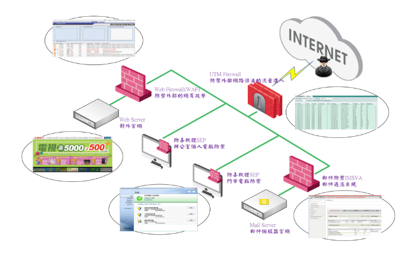
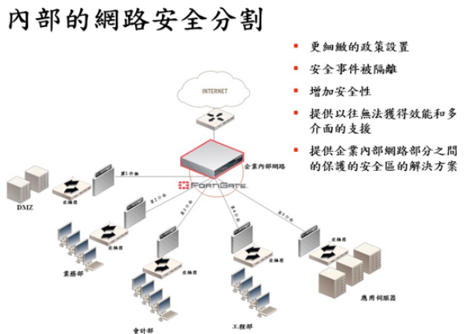
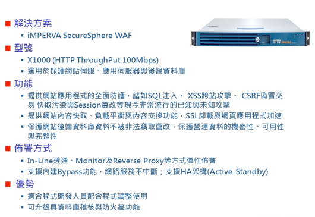
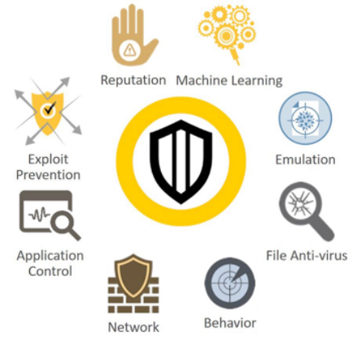

全國電子(股)公司董事長
本公司於109/5/8修訂董事會績效評估辦法，明訂每年應至少執行一次董事會績效評估，及每三年應至少委由外部專業獨立機構或專家執行一次董事會外部績效評估，評估對象包括整體董事會及個別董事成員(含功能性委員會成員)，評估程序由各董事填具「自評問卷」進行自我評量，相關評估結果，包括改善建議及未來改善計畫或行動，由董事會議事單位彙整評估結果後，送交董事會報告。108年董事會績效評估結果已於109年2月27日向董事會報告。
本公司之薪資報酬委員會於100年10月28日成立，委員計3人，負責訂定並定期檢討董事、監察人及經理人績效評估與薪資報酬之政策、制度、標準與結構，其成員之背景資料、學歷、兼任其它公司職務之情形及出席率之揭露，皆已公佈於公司年報，並可在公開資訊觀測站中查詢。
本公司經109年8月7日董事會決議通過，指定吳鴻淵資深經理擔任公司治理主管，保障股東權益並強化董事會職能。其已取得律師執業資格並具備公開發行公司從事法務之主管職務經驗達三年以上。公司治理主管主要職責為依法辦理董事會及股東會會議相關事宜、製作董事會及股東會議事錄、協助董事、監察人就任及持續進修、提供董事、監察人執行業務所需之資料、協助董事、監察人遵循法令等。
本公司內部稽核計3人，為獨立單位，隸屬於董事會，以落實公司治理之精神，其主要職責如下：
1. 訂定稽核政策，督導職能的推展。
2. 遵循主管機關公佈之相關法令並配合法令的修正及執行。
3. 內部八大循環作業控制合理性與適當性之查核、評估與改善。
4. 內部各項管理控制作業之查核、評估與改善。
5. 檢查及協助各部門評估內部控制制度設計的完整性、適當性及執行的有效性。
6. 董事會交辦稽核相關事項之辦理。
本公司內部稽核主管之任免，應經董事會通過，而內部稽核人員之任免、考核及薪酬，由稽核主管簽報至董事長。
獨立董事與內部稽核主管之溝通政策報告
1. 本公司獨立董事與內部稽核主管每年至少舉行一次座談會，就本公司稽核業務執行情形及其改善辦理情形等議題作充分溝通並作成記錄。
2. 歷次溝通情形摘要：
獨立董事與會計師之溝通政策報告
1. 本公司獨立董事與會計師每年至少舉行一次座談會，就本公司財務及公司整體運作情形及內控之查核情形向獨立董事報告，並針對有無重大調整或法令、會計公報之修訂有無影響充分溝通。
2. 歷次溝通情形摘要：
資訊安全架構 
資訊安全架構說明
一、入侵防禦設備防火牆UTM Firewall
由入侵防禦設備領導廠商 Fortigate 310 所建置而成的IPS防禦網，可以保護公司不受已知、零時差、阻斷服務(DoS)、分散式阻斷服務 (DDoS)、SYN
Flood等網路攻擊，同時可以免於間諜軟體、VoIP 漏洞、傀儡程式、惡意軟體、蠕蟲、木馬程式、網路釣魚與點對點應用程式的威脅。
因 Fortigate 310B 提供高達10埠(含)以上之10/100/1000Base Gigabit Ethernet介面，並可原機擴充至14埠(含)以上，可以據以布建在四個重要端點：
端點1 可以防止外部高風險網路的入侵攻擊
端點2 可以防止Intranet次高風險網路針對內網的攻擊
端點3 可以防止Internal使用者針對 DMZ 與Intranet 或感染殭屍病毒時竊取/回報訊息等攻擊。

二、網頁應用程式防火牆Web Firewall(WAF)
由由網頁應用程式防火牆領導廠商iMperva SecureSphere X1000所建置而成的網頁應用程式防禦網，布建在DMZ1區(Web
Server所在網段)與防火牆之間，可以提供公司網站應用程式的全面防護，諸如SQL注入、 XSS跨站攻擊、 CSRF偽冒交易
快取污染與Session篡改等現今非常流行的已知與未知攻擊。並提供SSL解密以確保網站資料即使經由加密也能受到保護。以確保全國電子公司營運資料的機密性、可用性與完整性。

自動應用學習：
Imperva 的動態建模SecureSphere 的獨特動態建模技術可自動學習被保護 Web 應用的結構、要素和預期使用模式。動態模型持續自動檢測有效的應用修改並將其納入到應用規則文件中。通過對比 Web
請求與模型規則，SecureSphere 能夠以高精度檢測不可接受的行為並防止惡意活動。動態設定檔克服了絕對安全模型相關的最大缺陷：需要手動創建和更新一個可能包含幾百甚至幾千個 URL、表單字段、參數和
cookies 的巨大白名單。動態設定檔技術可自動構建精確的配置檔，不需要手動配置或調整。
來自 Imperva ADC 的最新安全解決方案：
Imperva 應用防護中心 (ADC) 是一個國際知名的安全研究機構，他們持續調查全球各地報告的新漏洞，分析來自各種真實 Web 網站的濫用流量，並進行初步漏洞研究來識別最新威脅。這項研究的結果就是
SecureSphere 內各個層上的最新防護措施，包括簽名更新、協議驗證規則和關聯規則。除了最新的攻擊防護外，ADC還提供了可選的 ADC 知識服務。ADC
知識提供深入的商業應用程式知識、預構建的符合性報表和來自符合性與安全專家的最佳做法。
HTTP 協議驗證：
HTTP 協議驗證可以防止包括緩沖區溢出、惡意編碼、HTTP 走私以及非法伺服器操作在內的巨量協議濫用。靈活的規則使用戶可以嚴格遵守 RFC 標準，或者允許具體應用的微小偏差。
平臺和網路攻擊防護：
SecureSphere 阻止瞄準已知的 Web 服務器漏洞、中介軟體漏洞和平臺漏洞的攻擊。來自 Bugtraq、CVE®、Snort®、Imperva ADC 等來源的 4,000
多個簽名為防止這類攻擊提供了全面保護。除了識別已知的蠕蟲外，SecureSphere 還通過檢測具備 Web 蠕蟲攻擊特徵的獨特屬性組合來識別剛出現的新 Web 蠕蟲。SecureSphere
集成了狀態網路防火牆，能夠抵禦來自內部和外部來源的非法用戶、協定和網路攻擊。它符合強制性最佳做法安全要求，可以防止非必需協議使用敏感 Web 應用。
Web 服務保護：
利用其動態設定檔技術，SecureSphere 還能夠創建包括 XML 文件、要素、屬性、模式、變數和 SOAP操作在內的合法 Web 服務行為模型。任何篡改正常 Web
服務行為的企圖都會被發現並阻止。
無與倫比的準確度：
Imperva
獨有的關聯攻擊確認技術把跨安全層的、長期時間內的違規行為關聯起來，以準確識別最複雜的攻擊。個別違規可能無法確切地指明攻擊，但是，通過關聯獨特的違規組合就可以毫無疑問地確認攻擊。沒有任何其他解決方案的準確度能夠與通過關聯攻擊確認實現的準確度相提並論。
三、用戶端防毒軟體SYMANTEC ENDPOINT PROTECTION
SYMANTEC結合人工智慧與關鍵端點技術，提供世界最完善的端點安全防護。整合式網路防禦機制不僅可遏止現今的威脅，更可遏止未來的進階威脅。無論網路攻擊是如何入侵您的網路，都是以各個端點做為發動攻擊的跳板。我們的多層式用戶端防護解決方案可提供各項功能，其中包含檔案信譽與行為分析，以及先進的機器學習人工智慧。

四、郵件安全防禦InterScan Messaging Security
在所有電子郵件當中，有 90%
以上都是垃圾郵件，不僅如此，當遇到特別針對您機構而設計的魚叉式網路釣魚郵件時，就算是最有資安意識的員工，也可能不小心點選郵件中的惡意連結，讓企業陷入網路犯罪的風險當中。
趨勢科技 InterScan™ Messaging Security 提供了最完整的防護來防範傳統攻擊與針對性攻擊。它利用趨勢科技 Smart Protection Network™
的整合交叉關聯分析情報以及選擇性的沙盒模擬執行分析來攔截垃圾郵件、網路釣魚以及進階持續性滲透攻擊 (APT)。其內含的混合式 SaaS 部署選項結合了強大的閘道虛擬裝置與 SaaS 預先過濾，可在雲端
(也就是更靠近來源的地方) 攔截絕大部分的威脅。這套混合式解決方案結合了雙重優點：企業內裝置的隱私與控管能力，以及雲端預先過濾的資源效率與主動防護。此外，還有資料隱私與加密 (Data Privacy and
Encryption) 模組可將外送的資料加密，解決您最棘手的法規遵循與資料防護挑戰。這套選購的模組提供了容易使用的身分導向加密，再加上可自訂的資料外洩防護 (DLP)
範本，非常方便快速部署。
優勢：
1. 讓企業防範 APT 與其他針對性攻擊
◆ 利用 ScanMail™ 的多重防護，盡可能減少針對性攻擊。
採用趨勢科技社交工程攻擊防護技術來偵測魚叉式網路釣魚郵件。
◆ 內含變臉詐騙 (BEC) 防護，這是一種專門假冒公司高層人員的最新熱門網路釣魚技巧。
2. 利用信譽評等技術攔截更多惡意程式、網路釣魚與垃圾郵件
◆ 利用信譽評等技術攔截更多惡意程式、網路釣魚與垃圾郵件。
◆ 使用電子郵件寄件者信譽評等來濾掉 85% 的內送郵件，節省網路資源。
◆ 根據獨立測試可比其他防護產品攔截更多垃圾郵件，且誤判更少。
◆ 將處於灰色地帶的電子郵件加上標記 (例如大量發送的行銷電子報)，方便使用者將郵件分類排序。
◆ 檢查郵件當中的惡意連結，採用強化式網站信譽評等來防止網路釣魚攻擊。
3. 簡化資料防護及加密
◆ 利用身分導向的電子郵件加密，讓您更輕鬆保護外送郵件的安全，不論寄送對象為何。
◆ 藉由動態產生金鑰，免除 PKI 加密所需的預先登記和憑證管理作業。
◆ 提供 200 多種可自訂的資料外洩防護 (DLP) 範本，簡化法規遵循作業，預防資料外洩。
◆ 利用詳細的報表縮短管理時間，加快遵規稽核。